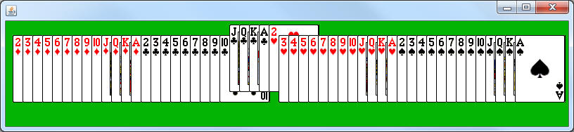
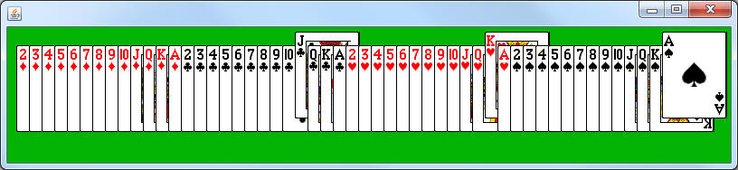

CardSelector
Create a class named CardSelectorBoard, which is a subclass of CardBoard.
Override the onMousePress method so that it will take the x and y from the MouseEvent and determine which FlipCard in the List that it clicks. If the FlipCard is clicked, you should use getY to see what the current y is and then set it to a different value. For example, if the y is 20 set it to 5, otherwise set it to 20. This will allow you to lower the FlipCard back down once it's raised.
If you run your code and try it, you will probably have a problem where you click one point, but all of the cards under the card you clicked also raise.
public static void selectorRunner()
{
CardSelector cs = new CardSelector();
cs.launch();
}

Raising a Single Card:
We want one click to raise up one FlipCard. To avoid raising all of the FlipCards that are under the mouse, before your loop you should declare a local FlipCard variable named clickedCard and set it to null. While looping, if the FlipCard is clicked you should assign it to clickedCard instead of setting the y.
This will replace the previous FlipCard in clickedCard, causing it to be forgotten. This should cause the last FlipCard that was clicked to be in the clickedCard variable after the loop has finished. This strategy is similar to what we do when finding the largest value in an array.
After the loop has finished, there are two possibilities:
1) At least one FlipCard was clicked, one of them is in clickedCard and should have its y value changed
2) No FlipCards were clicked, meaning that the value in clickedCard is still null.
Null values are dangerous. Make sure that you check to see if clickedCard contains a null value before you start calling methods.
If all goes well you should be able to raise and lower whichever FlipCard that you click on.
